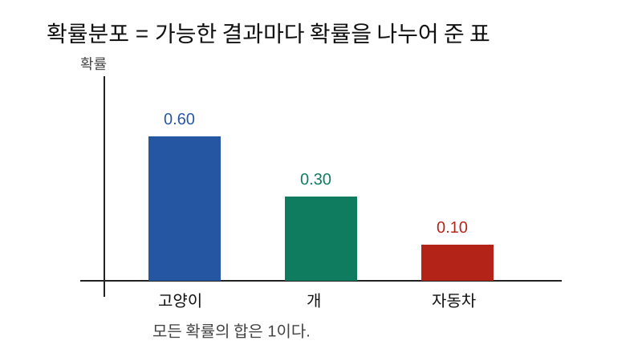
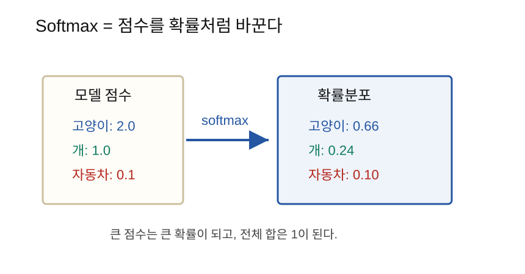
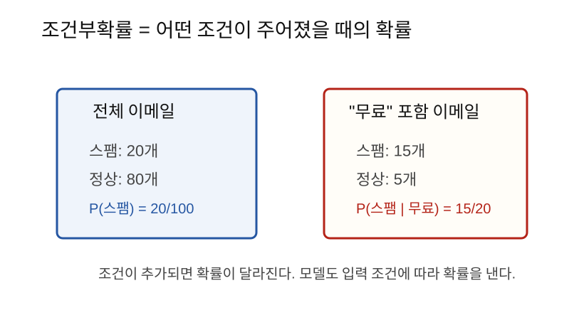

확률분포는 가능한 결과마다 확률을 나누어 준 것이고, softmax는 AI 모델의 점수를 확률분포처럼 바꾸는 함수다.
AI 모델은 종종 하나의 정답만 말하지 않고, 여러 가능성에 점수를 준다.
이미지 분류 모델을 예로 들면 다음과 같다.
고양이일 가능성
개일 가능성
자동차일 가능성언어모델도 비슷하다.
다음 토큰이 "오늘"일 가능성
다음 토큰이 "내일"일 가능성
다음 토큰이 "AI"일 가능성이런 가능성을 숫자로 다루려면 확률과 확률분포를 이해해야 한다.
확률은 어떤 일이 일어날 가능성을 0과 1 사이 숫자로 표현한 것이다.
0 = 절대 일어나지 않음
1 = 반드시 일어남
0.5 = 반반예를 들어 동전을 던질 때 앞면이 나올 확률은 보통 다음처럼 본다.
P(앞면) = 0.5P는 probability, 즉 확률을 뜻한다.
확률분포는 가능한 결과마다 확률을 나누어 준 것이다.
예를 들어 이미지 분류 모델이 다음처럼 판단했다고 하자.
| 클래스 | 확률 |
|---|---|
| 고양이 | 0.60 |
| 개 | 0.30 |
| 자동차 | 0.10 |
이것이 확률분포다.

확률분포에서 중요한 규칙은 다음과 같다.
각 확률은 0 이상 1 이하
전체 확률의 합은 1위 예제도 합이 1이다.
0.60 + 0.30 + 0.10 = 1.00항상 그렇지는 않다. 분류 모델의 마지막 계산은 보통 점수다.
예를 들어 모델이 다음 점수를 냈다고 하자.
| 클래스 | 모델 점수 |
|---|---|
| 고양이 | 2.0 |
| 개 | 1.0 |
| 자동차 | 0.1 |
이 점수는 아직 확률이 아니다.
이유는 다음과 같다.
따라서 이 점수를 확률분포처럼 바꾸는 함수가 필요하다. 그 함수가 softmax다.
softmax는 여러 점수를 받아서 확률분포로 바꾼다.
점수들 -> softmax -> 확률분포
softmax의 결과는 다음 조건을 만족한다.
각 값은 0과 1 사이
전체 합은 1
점수가 클수록 확률도 큼점수가 다음과 같다고 하자.
고양이: 2.0
개: 1.0
자동차: 0.1softmax를 통과하면 예를 들어 다음처럼 바뀐다.
고양이: 0.66
개: 0.24
자동차: 0.10가장 큰 점수였던 고양이가 가장 큰 확률을 받는다. 하지만 다른 클래스도 확률을 조금씩 가진다.
즉 softmax는 다음처럼 생각하면 된다.
"누가 가장 큰가?"만 보는 것이 아니라,
"각 후보가 상대적으로 얼마나 그럴듯한가?"를 확률처럼 표현한다.최종 예측만 필요하면 가장 큰 점수를 고르면 된다.
가장 큰 확률 = 예측 클래스하지만 학습할 때는 단순히 정답/오답만 알면 부족하다. 모델이 얼마나 확신했는지도 중요하다.
예를 들어 정답이 고양이라고 하자.
모델 A:
고양이 0.90, 개 0.08, 자동차 0.02모델 B:
고양이 0.40, 개 0.35, 자동차 0.25둘 다 고양이를 가장 높게 봤지만, 모델 A가 훨씬 확신이 크다. 학습에서는 이런 차이를 손실함수로 반영해야 한다.
조건부확률은 어떤 조건이 주어졌을 때의 확률이다.
P(A | B)이것은 이렇게 읽는다.
B라는 조건이 주어졌을 때 A일 확률예를 들어 이메일에 “무료”라는 단어가 있을 때 스팸일 확률을 생각해 보자.
P(스팸 | "무료" 포함)
조건이 주어지면 확률이 달라질 수 있다.
AI 모델도 입력이라는 조건이 주어졌을 때의 확률을 예측한다고 볼 수 있다.
P(클래스 | 입력 이미지)
P(다음 토큰 | 지금까지의 문장)언어모델은 다음 토큰의 확률분포를 예측한다.
문장이 다음과 같다고 하자.
오늘 날씨가모델은 다음 토큰 후보마다 확률을 낸다.
| 다음 토큰 | 확률 |
|---|---|
| 좋다 | 0.45 |
| 흐리다 | 0.20 |
| 매우 | 0.10 |
| 나쁘다 | 0.05 |
| 기타 | 0.20 |
이 중 하나를 고르면 다음 문장이 이어진다.
오늘 날씨가 좋다즉 언어모델의 핵심도 확률분포다.
모델이 항상 가장 높은 확률만 고르면 답이 단조로울 수 있다.
그래서 확률분포에서 뽑는 샘플링을 사용하기도 한다.
확률이 높은 토큰은 자주 뽑힘
확률이 낮은 토큰은 가끔 뽑힘temperature는 확률분포의 날카로움을 조절하는 값이다.
| temperature | 느낌 |
|---|---|
| 낮음 | 높은 확률 후보를 더 강하게 선택, 안정적 |
| 높음 | 낮은 확률 후보도 더 자주 선택, 다양함 |
쉽게 말하면,
temperature가 낮으면 보수적
temperature가 높으면 창의적이지만 흔들릴 수 있음다음 값이 확률분포인지 확인해 보자.
[0.7, 0.2, 0.1]각 값은 0과 1 사이이고 합은 다음과 같다.
0.7 + 0.2 + 0.1 = 1.0따라서 확률분포다.
이번에는 다음 값을 보자.
[2.0, 1.0, 0.1]합은 3.1이고, 1보다 큰 값도 있다. 따라서 확률분포가 아니다. 이것은 softmax에 넣기 전의 점수로 볼 수 있다.
import math
scores = [2.0, 1.0, 0.1]
exp_scores = [math.exp(s) for s in scores]
total = sum(exp_scores)
probs = [v / total for v in exp_scores]
print(probs)
print(sum(probs))PyTorch에서는 다음처럼 쓴다.
import torch
scores = torch.tensor([2.0, 1.0, 0.1])
probs = torch.softmax(scores, dim=0)
print(probs)
print(probs.sum())| 헷갈리는 말 | 쉽게 풀어쓴 말 |
|---|---|
| 확률 | 어떤 일이 일어날 가능성 |
| 확률분포 | 가능한 결과마다 확률을 나눠 준 것 |
| 모델 점수 | 아직 확률이 아닌 원래 출력값 |
| softmax | 점수를 확률분포로 바꾸는 함수 |
| 조건부확률 | 어떤 조건이 주어졌을 때의 확률 |
| temperature | 확률분포를 보수적 또는 다양하게 만드는 조절값 |
[2.0, 1.0, 0.1]이 확률분포가 아닌 이유는
무엇인가?P(클래스 | 입력 이미지)는 어떻게 읽을 수 있는가?확률분포는 가능한 결과마다 확률을 나누어 준 것이다. AI 분류 모델과 언어모델은 입력이 주어졌을 때 가능한 출력들의 확률분포를 예측한다. softmax는 모델의 점수를 확률분포로 바꾸는 함수이며, 다음 단계의 cross entropy 손실을 이해하기 위한 핵심 준비 개념이다.
다음 노트: 09_통계와데이터전처리